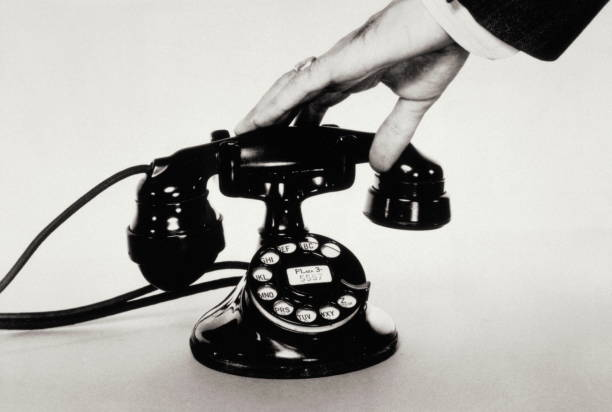
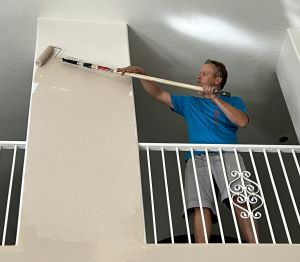

1(208) 201-5108
1(208) 201-5108
You Deserve Nothing but the Best
You Have the Right to the Best Restoration Services Blue Dingo Construction offers top-quality water damage restoration services to both residential and commercial clients. Our team is trained and experienced in extracting water and drying areas that suffer minor or major water damage. They will respond immediately to water damage emergencies caused by flooding, sewage backups, pipe bursts, and more. We will be on-site as soon as possible to begin the water removal and cleanup up process to keep the damage from becoming worse and causing a bigger problem.
What to Expect from Blue Dingo Construction During Water Damage Restoration
At Blue Dingo Construction, we understand that dealing with the aftermath of water damage can be overwhelming. Our dedicated team is here to support you every step of the way, ensuring that your property is restored to its pre-damage condition with the utmost care and professionalism. When you choose us for your water damage restoration needs, you can expect a comprehensive and meticulous process that includes the following key steps:
- Assessment: Our professionals will thoroughly evaluate the extent of damage caused by water, identifying areas affected by leaks, flooding, or other water-related issues.
- Water Extraction: We use specialized equipment to quickly remove standing water from your property to prevent further damage and reduce the risk of mold growth.
- Drying and Dehumidification: Our team will thoroughly dry and dehumidify the affected areas using industrial-grade equipment to ensure no moisture is left behind.
- Cleaning and Sanitizing: We clean and sanitize affected areas to remove any contaminants and prevent mold growth, ensuring a safe and healthy environment.
- Structural Repair: We'll repair or replace damaged structural elements, including walls, floors, and ceilings, to ensure your property's safety and stability.
- Content Restoration: Your belongings, such as furniture, carpets, and personal items, will be cleaned, repaired, or replaced to restore them to their pre-damage condition.
Blue Dingo Construction:
Excellence in Restoration Blue Dingo Construction stands out as a premier restoration company in the Phoenix area. We prioritize transparency and integrity, keeping you informed at every stage of the process. Rest assured, with us, you are in capable hands every step of the way. Drying and Disinfection Process Effective drying and disinfection are essential steps in the water remediation process. Restoration can't proceed until the affected area is thoroughly dried. Our team leverages the best equipment for each specific job, ensuring every spot is properly dried and prepared for restoration. Without adequate drying, your property faces the risk of severe structural damage and mold growth. Disinfection is equally crucial. While some water damage incidents involve clean water posing no health risks, others result from contaminated water that can cause serious health issues. In such cases, disinfecting the affected areas is mandatory. Our experts follow each step meticulously to guarantee your property remains clean, safe, and protected throughout the entire restoration process.
Easy Steps To Get Things Fixed!
1. Call Us
Our team is available around the clock, ready to respond and arrive on-site immediately.
2. We'll Do the Work Right!
From extraction to reconstruction, and coordinating with your insurance company, we handle everything!

3. Go back to living normally
Relax and enjoy your fully restored property, getting back to your life without any interruptions.